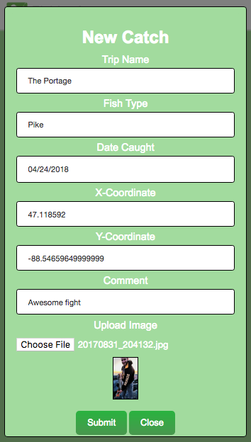
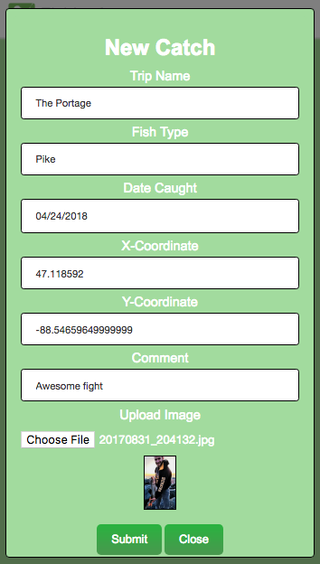

Grials Offline Fishing App Tutorial
By Jake Mager
Introduction
This tutorial covers the basics and everything you need to get started with offline support when developing with Grails.
A great introduction to start creating progressive web apps (PWA) and using
service workers with Grails.
We will be creating an offline Fishing App to demonstarte this. The following will be covered:
- Building a Grails App
- Spring Security Login
- Adding to the Grails database using ajax
- Handling offline interactions
- Building an offline queue with localforage
- Image Uploading
- Geolocation
However, the app will not be 100% done by the end of the tutorial, what won't be covered:
- Spring Security Registration
- Styling (however a .css will be included)
- Using multiple pages
- Full PWA capabilities
- Front end error checking
Prerequisites
- It is recommended that you have completed all the programming assignements on cs4760.cs.mtu.edu, but
this tutorial will go step by step and be as in depth as possible.
- Basic knowledge of HTML and jQuery is required
- We will be using IntelliJ IDEA
Finished Web App
Let's Get Started

 
